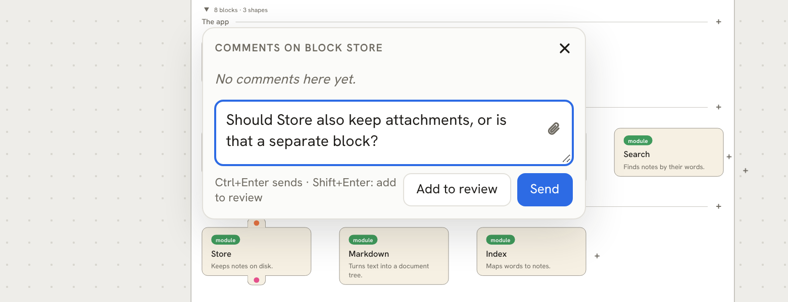
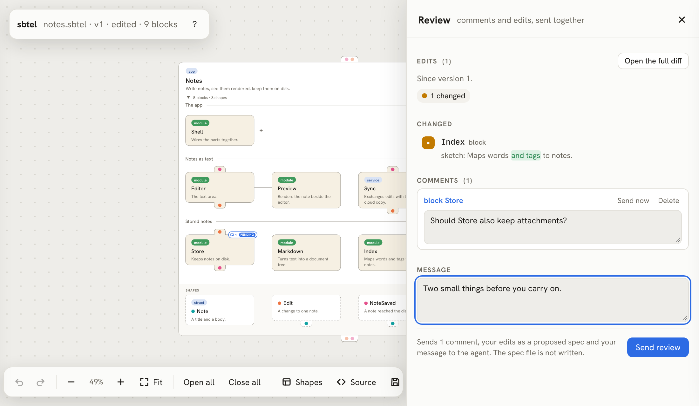
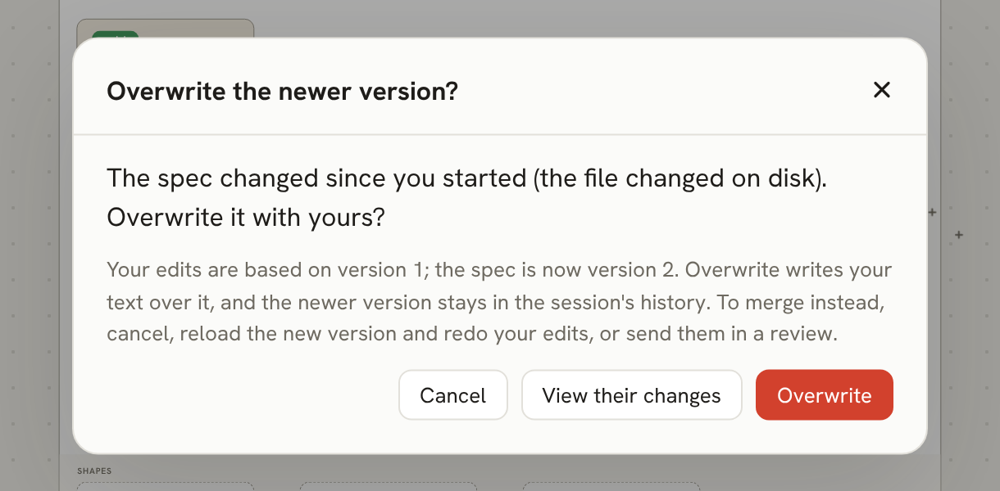
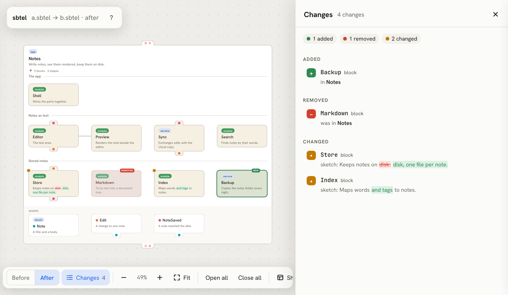
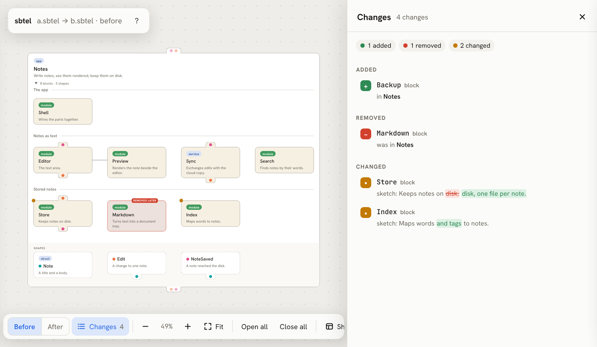

Using sbtel
sbtel is one static binary. It checks specs, serves the canvas where you and your coding agent look at the same design, and exports a diagram as a file you can send to anyone. This page covers the workflow, setup, the canvas and exporting.
The workflow
You design with your agent the way you would review a pull request with a colleague. The agent writes the spec; you read it as a picture, comment and edit; the agent revises.
- The agent opens a spec. It writes
notes.sbtel, lints it, and runssbtel open notes.sbtel. A browser tab shows the canvas. - You read it on the canvas, comment and review. Comments and edits gather in a draft review, and you send them together.
- The agent reads
sbtel inboxand pushes a revision. It applies your edits and answers your comments, then runssbtel open notes.sbtel --session <id>. The same tab offers to reload. sbtel checkkeeps the code honest. Once there is code, the agent lists who names whom in it and checks those edges against the levels.
This is what the agent sees after you send a review:
r2 review of version 1 by user, 2026-11-09T05:54:11Z: a message, 1 comment, proposed edits
> Looks right. Markdown belongs in Preview; one question on Store.
edits against version 1 (sbtel diff):
- block Markdown (was in Notes)
1 change (0 added, 1 removed, 0 moved, 0 renamed, 0 changed), 0 affected ports
proposed spec: ~/.sbtel/sessions/$id/proposals/2.sbtel
c2.1 comment on block Store
> Keep a backup of the last version, so a bad save can be undone.
source:
(block Store :type "module" (port :in Edit) (port :out NoteSaved) (~ Keeps notes on disk. ~))Install the CLI
On macOS, Linux, and Git Bash or MSYS on Windows:
curl -fsSL https://raw.githubusercontent.com/shashi/sbtel/main/install.sh | sh
In Windows PowerShell:
irm https://raw.githubusercontent.com/shashi/sbtel/main/install.ps1 | iex
Each installer downloads the release binary for your platform, verifies its SHA-256 checksum and puts it in ~/.local/bin, or %LOCALAPPDATA%\Programs\sbtel on Windows. Set SBTEL_INSTALL_DIR to choose another directory, or SBTEL_VERSION to pick a release. The binary has no runtime dependencies. Check that it works:
$ sbtel version
sbtel 0.3.0sbtel keeps its sessions in ~/.sbtel (%USERPROFILE%\.sbtel on Windows), or in $SBTEL_HOME when that is set. sbtel open opens a browser tab; on a machine without one, pass --no-browser or set SBTEL_NO_BROWSER=1 and it prints the address instead.
Set up your coding agent
In Claude Code, the sbtel repository is a plugin marketplace. Add it and install the plugin:
/plugin marketplace add shashi/sbtel /plugin install sbtel@sbtel
The plugin has three skills. They drive the sbtel binary, so install that too.
- sbtel-design
- Designing or restructuring a system as a spec, with you in the loop: levels of language, one strand per block, and a red-team pass over the result. It also critiques an existing spec.
- sbtel-recover
- Recovering a spec from an existing codebase: finding its levels, annotating the code with
@sbtelcomments, extracting the edges and runningsbtel check. Its helper scripts resolve references in JavaScript, TypeScript and Go. - sbtel-language
- Reading, writing and fixing specs, the
lint,queryandcheckcommands, and the review loop with you.
Other agents need two things: the CLI on their path, and the text of the language skill, plugin/skills/sbtel-language/SKILL.md, in their instructions or context. That file teaches the syntax and the loop; its reference.md has every rule. Tell the agent to run sbtel lint after every edit, and to wait for your review with sbtel inbox --wait instead of asking you in chat.
The sbtel canvas
The canvas is the picture of a spec. sbtel open shows it in a session with your agent, the playground edits a spec in your browser, and every diagram on this site is the same viewer.
Reading the picture
- Cards
- A card is a block. A pill shows its
:type, and the text under its name is its sketch. A card that holds levels has a triangle that opens and closes it. - Levels
- Each level’s name sits on the line above it, at the left. The top level is the highest.
- Adjacency lines
- A line between two cards in one level means they are adjacent: they may name each other.
- Ears
- Dots on a card’s top ear are its inputs, and dots on its bottom ear its outputs. A dot’s colour is its shape.
- Drawers
- Click an ear to open its drawer: one row per port, with its name and type.
- Callouts
- Point at a block, a port, a level’s name or an adjacency line, and its sketch appears beside it.
- Partners
- Point at a port and every block it can exchange values with is outlined in the type’s colour.
- Data flow
- Point at a shape, in the band at the bottom or on a port, and every type that carries it is outlined, along with every block that sends or takes one.
- Behaviors
- Point at a behavior and its implementers are outlined.
noteSaved.Note in the band at the bottom. Then point at RemoteEdit: Store takes it, because a RemoteEdit is an Edit.Editing
The picture is the spec: every edit rewrites the text. Click a port’s row, a level’s name or an adjacency line to edit it in place. Select a card and choose Edit for its name, type, sketch, ports and behaviors. Drag a block to move it; every place it may go lights up as a drop zone, and a drop that would break the scope rules bounces back with a note that says why. Delete removes what is selected, and ⌘Z undoes. On a phone, tap to select, drag to move, and long-press for the menu.
Comments
In a session, select a block and press C or Comment, or ⌘-click it (Ctrl-click on Windows and Linux). The block’s comments open in a callout beside it, with the agent’s replies under each and a box to write the next one. Send (⌘Enter) sends the comment to the agent on its own, straight away. Add to review (ShiftEnter) keeps it in your draft. A reply that arrives while the callout is closed puts a dot on the block’s comment bubble. Chat in the toolbar is the same callout for the file as a whole, and the list button beside it shows every thread, unread first.
Drop a file on a block, or drop or paste one into a comment (the paperclip does the same on a phone), to attach it: it is kept in .sbtel/files/ beside the spec and named with a ref. A ref to another .sbtel file opens that diagram over the page; what you say there reaches the agent of the page you came from.

The review
Review in the toolbar counts your pending comments and edits. The panel lists your edits as a change list, your comments, and a box for an overall message. Send review sends all of it as one. It never writes the spec file: your edits reach the agent as a proposed spec, and stay in the tab, marked as proposed, until the agent pushes a version. When it does, the tab offers to reload, and the agent’s replies appear on your comments.

Saving, and conflicts
Save (⌘S) skips the review and writes your text to the file directly. If the agent has pushed a version since you started editing, the canvas asks before overwriting it, and can show you their changes first. It never overwrites silently.

The diff view
sbtel open-diff a.sbtel b.sbtel shows what changed between two versions in one picture. Added parts are green, removed parts are dashed red ghosts in their old place, moved parts are blue with a faint ghost, and changed parts get an amber dot. The change list on the right takes you to each one. Before and After, or the B and A keys, switch between the two versions. sbtel diff prints the same changes as text.


Exporting
sbtel export writes the canvas as one self-contained HTML file with the spec inside it, for people who do not have sbtel. It opens from disk, makes no network request, and stays interactive. Email it, commit it, or host it anywhere; edits, undo and comments stay in the reader’s browser.
$ sbtel export notes.sbtel --bindings edges.txt notes.sbtel: 9 bindings, 0 not allowed sbtel export: wrote notes.html (606760 bytes, 593 KiB) $ sbtel export notes.sbtel --readonly -o notes-readonly.html sbtel export: wrote notes-readonly.html (606331 bytes, 593 KiB)
-o file- Where to write. The default is the spec’s name with
.html;-o -writes to standard output. --readonly- Turns editing off. Reading, highlights and comments still work.
--embed- The compact layout, for an iframe in your own docs. Its Open full view opens the same file with every panel.
--bindings edges.txt- Shows the edges’ violations in the checks, as
sbtel checkwould report them. --title text- The page title. The default is the top block’s name.
The spec is linted first. Warnings and violations go to standard error and the file is still written; a spec that does not parse writes nothing.
All commands
| Command | What it does |
|---|---|
sbtel lint spec.sbtel | Reports problems in a spec. Run it after every edit. |
sbtel query spec.sbtel Id [--with-deps] | Prints a slice of a large spec that lints on its own; --with-deps adds what the slice may use. |
sbtel check spec.sbtel --bindings edges.txt | Checks the code’s edges against the levels. |
sbtel diff a.sbtel b.sbtel | Prints what changed between two versions. |
sbtel open spec.sbtel [--session id] | Opens the canvas, or pushes a new version to an open one. |
sbtel open-diff a.sbtel b.sbtel | Opens the diff view. |
sbtel inbox id [--wait] | Prints what you sent: reviews, comments and saves. |
sbtel reply id c2.1 "text" | Answers a comment or a review in the open tab. |
sbtel export spec.sbtel | Writes the diagram as one HTML file. |
sbtel sessions, sbtel close id | Lists or ends sessions. |
sbtel version | Prints the version. |
sbtel <command> --help describes each command and its flags, and the commands that print results accept --json.